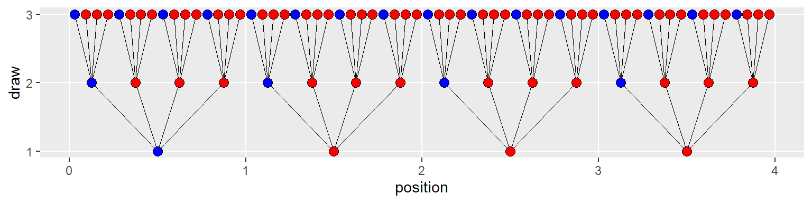
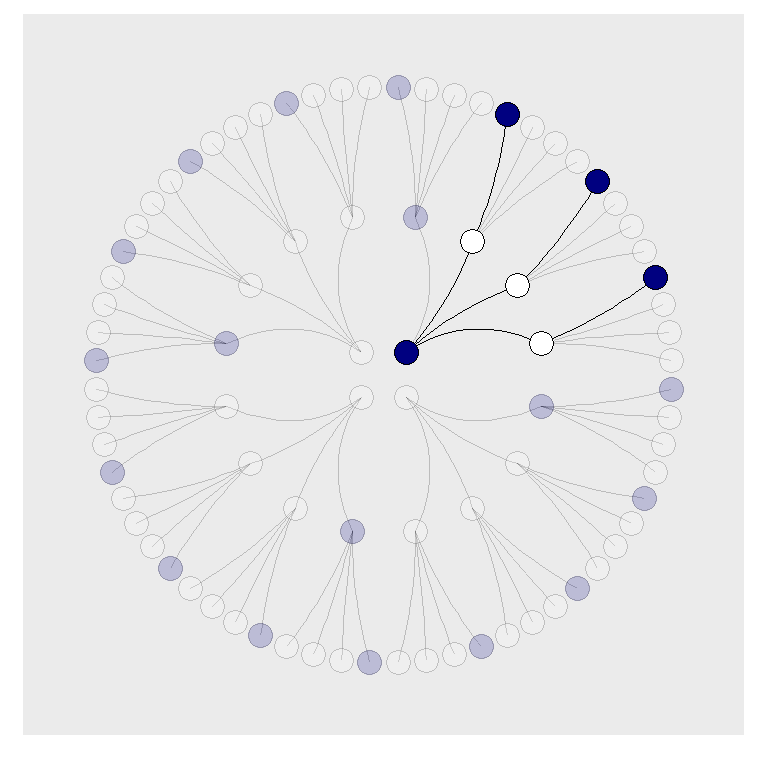

Chapter 5 Counting on tibble
5.1 Counting the ways
Instead of the base R wrangling we began to use in the previous chapter, we’ll make extensive use of the many packages from the tidyverse for data wrangling and plotting. Much of the R programming is a direct fork (I guess as in sticking a fork into a plate of food and putting in our mouth) from Solomon Kurz’s recasting of McElreath (2020).
The tidyverse-style syntax pipes %>% nouns (data) into verbs (functions). In RStudio we can use the shift-ctrl-m key combination to make the pipe with space formatting before and after. A good practice is to use piping as if they are analytical layers and thus press enter after each %>%to create a new row of row. The beauty of this approach is that we can follow the workflow as each piping literally creates new data from analytical step to analytical step in the workflow. Read chapter 5 of Grolemund and Wickham’s R for Data Science available online in Section 5.6.1.
We will extensively use the ggplot2 (Wickham et al. 2020; Wickham 2016) system in the tidyverse. The gg stands for the grammar of graphics. In this framework, similar to the way Adobe Photoshop and other image processors work, we layer graphical elements onto a blank canvas. These elements start with a data frame, here a tibble. From the tibble axes on a canvas along with groupings of data using factors that are categorical variables in the tibble. We then put geometrical objects on top of this growing canvas. Objects include lines, points, text all with size, shape, and color, among other attributes. We can also make graphics interactive using the plotly package with tools such as brushing, zooming, and visually driven queries. The plotly site has much more information and many gallery examples of which we might avail ourselves. As interesting, and where plotly is going is it calls itself the front-end of ML [machine learning] and data science..
Tibbles (Müller and Wickham 2020) are the backbone of the management of the data we use in all of the functional workings of our model. First of all, a tibble is a data frame and has the two dimensions of any matrix or table, rows and columns. So, whenever we talk about data frames, we’re usually talking about tibbles. For more on the topic, check out R4SD, Chapter 10.
It is often best to learn of tibbles by doing. Doing what? Why, it is piping data from a raw tibble to aggregations of the data, transformations of the raw data and aggregations. Here is a very simple example in the tidyverse that makes use of the dplyr package.
Let’s make some toy data to play with. We generate 100 variates normally distributed with mean 10 and standard deviation 5. We then transform this series into another and display the first 10 rows. To reproduce results we set the random seed.
library(tidyverse)
set.seed(42)
n_sim <- 100
x <- abs(rnorm(n_sim, 10, 5))
y <- 3 + 0.5 * x
xy_tbl <- tibble(y = y, x = x)
xy_tbl## # A tibble: 100 x 2
## y x
## <dbl> <dbl>
## 1 11.4 16.9
## 2 6.59 7.18
## 3 8.91 11.8
## 4 9.58 13.2
## 5 9.01 12.0
## 6 7.73 9.47
## 7 11.8 17.6
## 8 7.76 9.53
## 9 13.0 20.1
## 10 7.84 9.69
## # ... with 90 more rowsWith this tibble we can transform the variables by adding more through a pipe to the mutate() verb and assign the results to another tibble object.
## # A tibble: 100 x 4
## y x log_y log_x
## <dbl> <dbl> <dbl> <dbl>
## 1 11.4 16.9 2.44 2.82
## 2 6.59 7.18 1.89 1.97
## 3 8.91 11.8 2.19 2.47
## 4 9.58 13.2 2.26 2.58
## 5 9.01 12.0 2.20 2.49
## 6 7.73 9.47 2.05 2.25
## 7 11.8 17.6 2.47 2.87
## 8 7.76 9.53 2.05 2.25
## 9 13.0 20.1 2.57 3.00
## 10 7.84 9.69 2.06 2.27
## # ... with 90 more rowsOf course, in this code we overwrote the first version of the xy_tbl tibble.
Next we aggregate this transformed tibble into a custom summary of the data.
options(digits = 4, scipen = 99999)
xy_summary <- xy_tbl %>% gather(key = "variable",
value = "value") %>% group_by(variable) %>%
summarize(min = min(value), pct_5 = quantile(value,
0.05), pct_50 = quantile(value,
0.5), pct_95 = quantile(value,
0.95), max = max(value))
xy_summary## # A tibble: 4 x 6
## variable min pct_5 pct_50 pct_95 max
## <chr> <dbl> <dbl> <dbl> <dbl> <dbl>
## 1 log_x 0.0893 0.984 2.35 2.87 3.06
## 2 log_y 1.27 1.47 2.11 2.47 2.62
## 3 x 1.09 2.68 10.4 17.6 21.4
## 4 y 3.55 4.34 8.22 11.8 13.7Lots of things are happing to us here.
optionssets the rest of the calculations to 4 decimal places with sufficient penalties to avoid scientific notation.gather()puts the data into a long format, also known as a flat table.This allows us to
group_bythe subsequent aggregations insummarize()byvariable, the data key.The transformed tibble has
summarized()d each variable’s vital statistics in new tibble colums.
The inverse of gather() is arrange() which awaits us in future work.
This is a great start to exploring our data. Gosh, we could even write a helper function to wrap all of this into an easy to use replacement for the base R summary() function. Again this lovely activity awaits us in future work.
5.2 Having all of our marbles
Let code the example in chapter 1. This includes red and blue voters. Let’s willingly suspend our disbelief and call them marbles in a bag. The bag is not transparent and those who draw a marble-voter from the bag are blind-folded. If they were draw a marble-voter from the bag they must return their find to the bag.
If we’re willing to code the marbles as 0 = red 1 = blue, we can arrange the hypothetical possibilities of combinations of blue and red marble-voters in a tibble qua bag as follows. Again this is data. Attributes like color and shapes will indeed follow, but at the visualization layer of the architecture of this discussion and coding exercise.
d <- tibble(p1 = 0, p2 = rep(1:0, times = c(1,
3)), p3 = rep(1:0, times = c(2, 2)),
p4 = rep(1:0, times = c(3, 1)), p5 = 1)
d## # A tibble: 4 x 5
## p1 p2 p3 p4 p5
## <dbl> <int> <int> <int> <dbl>
## 1 0 1 1 1 1
## 2 0 0 1 1 1
## 3 0 0 0 1 1
## 4 0 0 0 0 1YATBL = yet another tibble, and they will not stop coming! In this one we use the rep() function to replicate first 1’s then down to 0’s once and then 3 times in p2. This creates a 4 row by 5 column array with upper 1’s and lower 0’s.
We will visualize this arrange in a transformation of this tibble. First we use set_names() to replace the p1 to p5 column names. With mutate() we create row names of the 4 conjectures labelled 1 to 4. The pivot_longer() creates a flat grid of
d <- d %>% set_names(1:5) %>% mutate(x = 1:4) %>%
pivot_longer(-x, names_to = "conjecture") %>%
mutate(value = value %>% as.character())
d## # A tibble: 20 x 3
## x conjecture value
## <int> <chr> <chr>
## 1 1 1 0
## 2 1 2 1
## 3 1 3 1
## 4 1 4 1
## 5 1 5 1
## 6 2 1 0
## 7 2 2 0
## 8 2 3 1
## 9 2 4 1
## 10 2 5 1
## 11 3 1 0
## 12 3 2 0
## 13 3 3 0
## 14 3 4 1
## 15 3 5 1
## 16 4 1 0
## 17 4 2 0
## 18 4 3 0
## 19 4 4 0
## 20 4 5 1we see the flat grid of for 1 there are each 1, then 2, then and so on to 4. Then this is stacked on four 2’s, on top of four 3’s, and four 4’s. This is the same kind of operation the gather() function performed in the previous section. We then add one for line to identify that the value column are not only the 1’s and 0’s from the tibble, but they are to be characters. This allows our plot to identify them as categories and thus fillable with colors.
With all of that we make the plot. The `ggplot() statement sets up the canvas with x and y axes and the value fill for each of the x by possibilities in the bag of marbles-voters. Laayered in are points with a particular shape and size, fill colors, and scaling details. A theme() call removes the unnecessary (for our purpose) legend.
d <- tibble(p1 = 0, p2 = rep(1:0, times = c(1,
3)), p3 = rep(1:0, times = c(2, 2)),
p4 = rep(1:0, times = c(3, 1)), p5 = 1)
#
d %>% set_names(1:5) %>% mutate(x = 1:4) %>%
pivot_longer(-x, names_to = "conjecture") %>%
mutate(value = value %>% as.character()) %>%
ggplot(aes(x = x, y = conjecture,
fill = value)) + geom_point(shape = 21,
size = 5) + scale_fill_manual(values = c("blue",
"red")) + scale_x_discrete(NULL,
breaks = NULL) + theme(legend.position = "none")
The tidyr::pivot_longer() function is an updated variant of gather(). Just like Excel pivot tables, pivot_longer() allows for very creative reshaping and aggregation of data. These articles, here and here (“Pivot Data from Wide to Long Pivot_longer” 2020; “Pivoting” 2020), provide more examples.
Here’s the basic structure of the conjectures per marble-voter draw.
| draw | marbles | possibilities |
|---|---|---|
| 1 | 4 | 4 |
| 2 | 4 | 16 |
| 3 | 4 | 64 |
We have a table and visual of the 5 conjedctures in hand. Now we make another flat (longer format again) tibble that will have 84 rows of all of the combinations of the three draws of blue, red, and blue in the example. At the first draw there are 4 marble-voters. At the second draw there are \(4^2 = 16\) potential marble-voter draws. At the third draw each of these 16 has 4 marble-voters in the bag as possibilities or \(4^3=64\). These are positions on a tree with 4 nodes blossoming into 16 nodes, further growing into 64 nodes for a total of 84 nodes. We then linearly interpolate equally spaced nodes from node 1 to node 84.
## [1] 1.0000 2.0000 3.0000 4.0000 0.2500 0.5000 0.7500 1.0000 1.2500 1.5000 1.7500 2.0000
## [13] 2.2500 2.5000 2.7500 3.0000 3.2500 3.5000 3.7500 4.0000 0.0625 0.1250 0.1875 0.2500
## [25] 0.3125 0.3750 0.4375 0.5000 0.5625 0.6250 0.6875 0.7500 0.8125 0.8750 0.9375 1.0000
## [37] 1.0625 1.1250 1.1875 1.2500 1.3125 1.3750 1.4375 1.5000 1.5625 1.6250 1.6875 1.7500
## [49] 1.8125 1.8750 1.9375 2.0000 2.0625 2.1250 2.1875 2.2500 2.3125 2.3750 2.4375 2.5000
## [61] 2.5625 2.6250 2.6875 2.7500 2.8125 2.8750 2.9375 3.0000 3.0625 3.1250 3.1875 3.2500
## [73] 3.3125 3.3750 3.4375 3.5000 3.5625 3.6250 3.6875 3.7500 3.8125 3.8750 3.9375 4.0000Not only that we should label each node level as draw 1, 2, and 3. For 84 nodes we have to match the first draw of 4 marble-voters, each of which again blossoms into 4 for a total of 16 potential marble-voters, and on to the third draw with 64 marble voters for a total of 84 again.
## [1] 1 1 1 1 2 2 2 2 2 2 2 2 2 2 2 2 2 2 2 2 3 3 3 3 3 3 3 3 3 3 3 3 3 3 3 3 3 3 3 3 3 3 3
## [44] 3 3 3 3 3 3 3 3 3 3 3 3 3 3 3 3 3 3 3 3 3 3 3 3 3 3 3 3 3 3 3 3 3 3 3 3 3 3 3 3 3In a plot we will fill these categorically with blue and red. First we get the conjecture sequence of blue, followed by 3 red marbles in the bag. We remember that this is one of five conjectures.
## [1] "b" "r" "r" "r"Now we mash these four marbles with the 84 draws and positions.
## [1] "b" "r" "r" "r" "b" "r" "r" "r" "b" "r" "r" "r" "b" "r" "r" "r" "b" "r" "r" "r" "b"
## [22] "r" "r" "r" "b" "r" "r" "r" "b" "r" "r" "r" "b" "r" "r" "r" "b" "r" "r" "r" "b" "r"
## [43] "r" "r" "b" "r" "r" "r" "b" "r" "r" "r" "b" "r" "r" "r" "b" "r" "r" "r" "b" "r" "r"
## [64] "r" "b" "r" "r" "r" "b" "r" "r" "r" "b" "r" "r" "r" "b" "r" "r" "r" "b" "r" "r" "r"All together we have this tibble. While this is quite a job to think through and carve out this hierarchical data tree we gain insight into how data is shaped and molded to our purposes.
d <- tibble(position = c((1:4^1)/4^0,
(1:4^2)/4^1, (1:4^3)/4^2), draw = rep(1:3,
times = c(4^1, 4^2, 4^3)), fill = rep(c("b",
"r"), times = c(1, 3)) %>% rep(.,
times = c(4^0 + 4^1 + 4^2)))
d## # A tibble: 84 x 3
## position draw fill
## <dbl> <int> <chr>
## 1 1 1 b
## 2 2 1 r
## 3 3 1 r
## 4 4 1 r
## 5 0.25 2 b
## 6 0.5 2 r
## 7 0.75 2 r
## 8 1 2 r
## 9 1.25 2 b
## 10 1.5 2 r
## # ... with 74 more rowsWe now have Solomon Kurz’s initial plot. We notice he put in 3 breaks in the otherwise continuous scale that is position.
d %>% ggplot(aes(x = position, y = draw,
fill = fill)) + geom_point(shape = 21,
size = 3) + scale_fill_manual(values = c("blue",
"red")) + scale_y_continuous(breaks = 1:3) +
theme(legend.position = "none", panel.grid.minor = element_blank())
How do we draw lines from one draw (level in the hierarchy) to another? Again a tibble comes to our aid. Line segments in plots are simply beginning and ending x and y coordinates.The first of two tibbles will connect the positions from the first to the second draw. The second will connect the 16 second draw positions to the 64 third draw positions. The y coordinates are easy. The x coordinates are a little more daunting. But we have already computed these before in making the tibble positions. We are sure to notice the each = 4 detail for the x coordinates as the nodes fan out from draw to draw.
# these will connect the dots from
# the first and second draws
lines_1 <- tibble(x = rep((1:4), each = 4),
xend = ((1:4^2)/4), y = 1, yend = 2)
lines_1## # A tibble: 16 x 4
## x xend y yend
## <int> <dbl> <dbl> <dbl>
## 1 1 0.25 1 2
## 2 1 0.5 1 2
## 3 1 0.75 1 2
## 4 1 1 1 2
## 5 2 1.25 1 2
## 6 2 1.5 1 2
## 7 2 1.75 1 2
## 8 2 2 1 2
## 9 3 2.25 1 2
## 10 3 2.5 1 2
## 11 3 2.75 1 2
## 12 3 3 1 2
## 13 4 3.25 1 2
## 14 4 3.5 1 2
## 15 4 3.75 1 2
## 16 4 4 1 2# these will connect the dots from
# the second and third draws
lines_2 <- tibble(x = rep(((1:4^2)/4),
each = 4), xend = (1:4^3)/(4^2),
y = 2, yend = 3)
lines_2## # A tibble: 64 x 4
## x xend y yend
## <dbl> <dbl> <dbl> <dbl>
## 1 0.25 0.0625 2 3
## 2 0.25 0.125 2 3
## 3 0.25 0.188 2 3
## 4 0.25 0.25 2 3
## 5 0.5 0.312 2 3
## 6 0.5 0.375 2 3
## 7 0.5 0.438 2 3
## 8 0.5 0.5 2 3
## 9 0.75 0.562 2 3
## 10 0.75 0.625 2 3
## # ... with 54 more rowsWe now use the lines_1 and lines_2 data in the plot with two geom_segment() functions layered into the initial plot.
d %>% ggplot(aes(x = position, y = draw)) +
geom_segment(data = lines_1, aes(x = x,
xend = xend, y = y, yend = yend),
size = 1/3) + geom_segment(data = lines_2,
aes(x = x, xend = xend, y = y, yend = yend),
size = 1/3) + geom_point(aes(fill = fill),
shape = 21, size = 3) + scale_fill_manual(values = c("blue",
"red")) + scale_y_continuous(breaks = 1:3) +
theme(legend.position = "none", panel.grid.minor = element_blank())
We generated the values for position (i.e., the \(x\)-axis) al right justified to the position number. To center the nodes for the first draw we simply will subtract 0.5 from each node. In a slightly trickier move, noting there are four marble-voter possibilities in this conjecture we will subtract \(0.50/4=0.125\) for draw 2, and \((0.05/4)/4=0.125/4=0.03125\) for draw 3. The ifelse() function will allow us to control the three conditions across the positions. If anything else, this is great control practice especially with piping. We should notice the use of the \(4^0=1,\,4^1=4,\,4^2=16\) sequence.
d <- d %>% mutate(denominator = ifelse(draw ==
1, 0.5, ifelse(draw == 2, 0.5/4,
0.5/4^2))) %>% mutate(position = position -
denominator)The same logic will work for lines_1 and lines_2.
lines_1 <- lines_1 %>% mutate(x = x -
0.5, xend = xend - 0.5/4^1)
lines_2 <- lines_2 %>% mutate(x = x -
0.5/4^1, xend = xend - 0.5/4^2)
lines_1## # A tibble: 16 x 4
## x xend y yend
## <dbl> <dbl> <dbl> <dbl>
## 1 0.5 0.125 1 2
## 2 0.5 0.375 1 2
## 3 0.5 0.625 1 2
## 4 0.5 0.875 1 2
## 5 1.5 1.12 1 2
## 6 1.5 1.38 1 2
## 7 1.5 1.62 1 2
## 8 1.5 1.88 1 2
## 9 2.5 2.12 1 2
## 10 2.5 2.38 1 2
## 11 2.5 2.62 1 2
## 12 2.5 2.88 1 2
## 13 3.5 3.12 1 2
## 14 3.5 3.38 1 2
## 15 3.5 3.62 1 2
## 16 3.5 3.88 1 2## # A tibble: 64 x 4
## x xend y yend
## <dbl> <dbl> <dbl> <dbl>
## 1 0.125 0.0312 2 3
## 2 0.125 0.0938 2 3
## 3 0.125 0.156 2 3
## 4 0.125 0.219 2 3
## 5 0.375 0.281 2 3
## 6 0.375 0.344 2 3
## 7 0.375 0.406 2 3
## 8 0.375 0.469 2 3
## 9 0.625 0.531 2 3
## 10 0.625 0.594 2 3
## # ... with 54 more rowsNow the plot looks centered and more like a drafting dream come true.
d %>% ggplot(aes(x = position, y = draw)) +
geom_segment(data = lines_1, aes(x = x,
xend = xend, y = y, yend = yend),
size = 1/3) + geom_segment(data = lines_2,
aes(x = x, xend = xend, y = y, yend = yend),
size = 1/3) + geom_point(aes(fill = fill),
shape = 21, size = 3) + scale_fill_manual(values = c("blue",
"red")) + scale_y_continuous(breaks = 1:3) +
theme(legend.position = "none", panel.grid.minor = element_blank())
Last and not the least visually, let’s wrap the x-axis about a circle by transforming from a rectangular to a polar coordinate system with the coord_polar() layer.
d %>% ggplot(aes(x = position, y = draw)) +
geom_segment(data = lines_1, aes(x = x,
xend = xend, y = y, yend = yend),
size = 1/3) + geom_segment(data = lines_2,
aes(x = x, xend = xend, y = y, yend = yend),
size = 1/3) + geom_point(aes(fill = fill),
shape = 21, size = 4) + scale_fill_manual(values = c("blue",
"red")) + scale_x_continuous(NULL,
limits = c(0, 4), breaks = NULL) +
scale_y_continuous(NULL, limits = c(0.75,
3), breaks = NULL) + coord_polar() +
theme(legend.position = "none", panel.grid = element_blank())
We have to recall that the 1 blue and three red in the middle of this mandela is but one conjecture. There are 4 others, only two of which are non-trivial. The whole point of this execise is the identify by brute force enumeration the only three choices that allow the data to be consistent with the conjecture. To illustrate this Kurz adds an index called remain to indicate only those logically consistent paths after each choice for nodes and lines (edges) of this graph. The remain indicator is 1 if the draw (data) is logically consistent with the conjecture (hypothesis) and 0 if not. We will print out d to illustrate.
lines_1 <- lines_1 %>% mutate(remain = c(rep(0:1,
times = c(1, 3)), rep(0, times = 4 *
3)))
lines_2 <- lines_2 %>% mutate(remain = c(rep(0,
times = 4), rep(1:0, times = c(1,
3)) %>% rep(., times = 3), rep(0,
times = 12 * 4)))
d <- d %>% mutate(remain = c(rep(1:0,
times = c(1, 3)), rep(0:1, times = c(1,
3)), rep(0, times = 4 * 4), rep(1:0,
times = c(1, 3)) %>% rep(., times = 3),
rep(0, times = 12 * 4)))
d## # A tibble: 84 x 5
## position draw fill denominator remain
## <dbl> <int> <chr> <dbl> <dbl>
## 1 0.5 1 b 0.5 1
## 2 1.5 1 r 0.5 0
## 3 2.5 1 r 0.5 0
## 4 3.5 1 r 0.5 0
## 5 0.125 2 b 0.125 0
## 6 0.375 2 r 0.125 1
## 7 0.625 2 r 0.125 1
## 8 0.875 2 r 0.125 1
## 9 1.12 2 b 0.125 0
## 10 1.38 2 r 0.125 0
## # ... with 74 more rowsAnd now Kurz’s piece de resistance.
d %>% ggplot(aes(x = position, y = draw)) +
geom_segment(data = lines_1, aes(x = x,
xend = xend, y = y, yend = yend,
alpha = remain %>% as.character()),
size = 1/3) + geom_segment(data = lines_2,
aes(x = x, xend = xend, y = y, yend = yend,
alpha = remain %>% as.character()),
size = 1/3) + geom_point(aes(fill = fill,
alpha = remain %>% as.character()),
shape = 21, size = 4) + # it's the alpha parameter that makes
# elements semitransparent
scale_fill_manual(values = c("blue",
"red")) + scale_alpha_manual(values = c(1/5,
1)) + scale_x_continuous(NULL, limits = c(0,
4), breaks = NULL) + scale_y_continuous(NULL,
limits = c(0.75, 3), breaks = NULL) +
coord_polar() + theme(legend.position = "none",
panel.grid = element_blank())
The alpha attribute in the geom_point() governs the opacity of each filled circle (shape = 21). When remain as a categorical variable (%>% as.character()) is 1 the default 100% opacity is rendered. Otherwise a lesser opacity will render and thus we see the lighter elements.
All in all this exercise allows us to stretch our data creation, reshaping, and transformation muscles. It also shows the effort needed to create compelling visualizations of the data for consumption by decision makers.
A useful practice exercise is to use this model to build the visualizations of the other two conjectures.
References
McElreath, R. 2020. Statistical Rethinking: A Bayesian Course with Examples in R and Stan, 2nd Ed.
Müller, Kirill, and Hadley Wickham. 2020. tibble: Simple Data Frames. https://CRAN.R-project.org/package=tibble.
“Pivot Data from Wide to Long Pivot_longer.” 2020. https://tidyr.tidyverse.org/reference/pivot_longer.html.
“Pivoting.” 2020. https://tidyr.tidyverse.org/articles/pivot.html.
Wickham, Hadley. 2016. ggplot2: Elegant Graphics for Data Analysis. Springer-Verlag New York. https://ggplot2.tidyverse.org.
Wickham, Hadley, Winston Chang, Lionel Henry, Thomas Lin Pedersen, Kohske Takahashi, Claus Wilke, Kara Woo, Hiroaki Yutani, and Dewey Dunnington. 2020. ggplot2: Create Elegant Data Visualisations Using the Grammar of Graphics. https://CRAN.R-project.org/package=ggplot2.